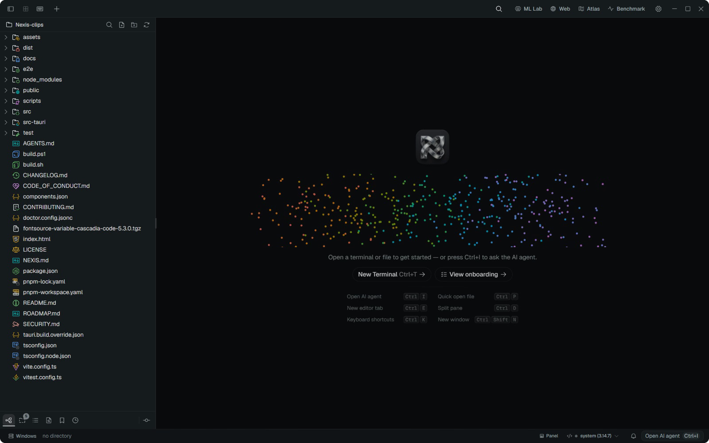

Spotlight
Files and commands, with a live preview
Terminal
Native PTY, WebGL rendering, shell integration
AI agent
Your keys or a local model, with an animated orb
Documents
Markdown and Word, with local PDF export
Themes
22 built-in themes, live as you click